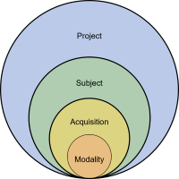
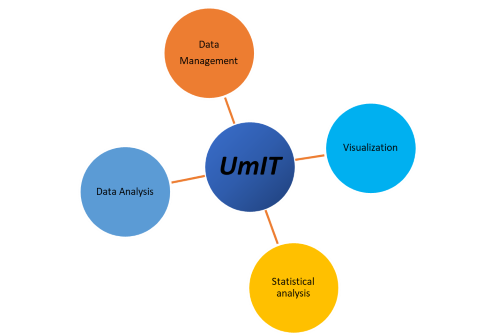

Recent advances in genetic tools, such as fast-responding calcium indicators (e.g., GCaMP6f) as well as the increasingly accessible high-speed, high-resolution and high throughput longitudinal recording systems allowed the acquisition of faster and more detailed images at mesoscale level for months on large cohorts of animals. This generates large amounts of data that need to be stored, pre-processed and analyzed in a timely manner which can become a limiting factor as experiments become larger and more complex.
The umIToolbox, or umIT for short is a toolbox written in MATLAB created to help researchers manage and automate critical steps of processing large-scale imaging datasets. The toolbox is currently in active development and new features are added periodically. The toolbox can be found in our GitHub repository. If you encounter any bugs or have suggestions on how to improve the toolbox, let us know by opening an issue in the GitHub Issue Tracker. You can also use the project's discussion forum to share ideas and questions with the developers and other users of the toolbox.
A typical imaging project consists of one or more cohorts of subjects (e.g. mice) that undergo one or more acquisition (i.e. recording) sessions. Frequently, other recording modalities are associated with the imaging data such as behavioral responses, eye/body tracking, etc. The toolbox follows the same organization principle where one can manage subjects, acquisitions and recording modalities for a given project.

Conceptual organization of a typical imaging project.
The management of the project datasets is done by creating a database and saving it to a project .mat file. Once the project file is created, the toolbox can automatically detect new subjects or acquisitions and update the file.
In addition to the experiment management tool, the toolbox provides a series of analysis functions and a pipeline engine that allows the automation of several steps of the data processing. These two modules (experiment management and data analysis) were created to be adaptable and easily extensible in order to fulfill the needs of different neuroimaging experiment designs. Finally, umIT provides tools to visualize imaging data and to perform statistical comparisons between groups.

The 4 main roles of umIT.